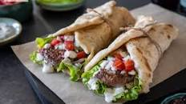
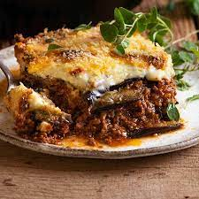
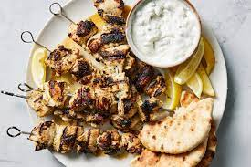

GASTRONOMÍA GRIEGA
En este apartado tenemos la gastronomía griega, una que,afortunadamente para mí, tuve el gusto de probar el verano pasado en mi viaje a Grecia. Debido a este hecho, se me presentó la oportunidad de probarla, por lo que actualmente puedo constatar que se trata de una de las mejores gastronomías que he probado, y he aquí las tres mejores comidas que presenta.
GYROS
- Los gyros son una comida griega procedente de turquía. Consisten en carne asada que se sirve el pan de pita acompañado por verduras, patatas fritas y salsas. Los ingredientes más comunes son tomate, cebolla,lechuga y salsa tzatziki.El gyros llegó a Grecia en la década de 1920 con los refugiados griegos que huían de Asia Menor. A diferencia del döner, el gyros normalmente se hace de cerdo.

MOUSSAKA
- La moussaka o musaca es un plato con origen en los balcanes y el medio oriente hecho a base berenjena.La versión griega, que es la más conocida internacionalmente, consiste de capas de carne picada de cordero, berenjena en rebanadas, y tomate, cubierto de una salsa bechamel y horneado.

SOUVLAKI
- En tercer lugar, tenemos los souvlaki. El souvlaki es un plato popular de la cocina griega consistente en pequeñas piezas de carne intercaladas con verduras y aderezos. Se come con las manos, dentro de un pan de pita o con el pincho sobre un plato con patatas fritas o pilaf. Se suele utilizar carne de cordero, de cerdo, vacuna o de pollo.
